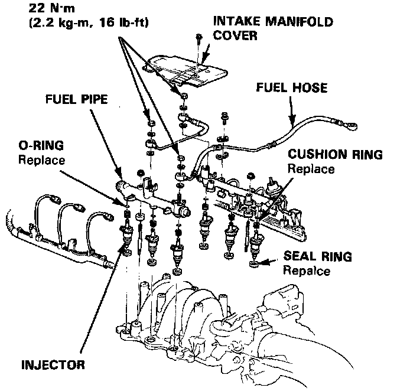
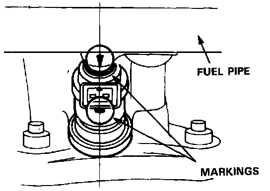

Sedan
Fuel Injector ReplacementWARNING: Do not smoke during the work. Keep open flames away from your work area.
1. Disconnect the battery negative cable from the battery negative terminal.
2. Relieve fuel pressure.
3. Disconnect the connectors of the injectors.
4. Disconnect the vacuum hose and fuel return hose from the pressure regulator.
NOTE: Place a rag or shop towel over the hoses before disconnecting them.
5. Remove the intake manifold cover.
6. Disconnect the fuel hose from the fuel pipe.
7. Loosen the retainer nuts on the fuel pipe and harness holder.
8. Disconnect the fuel pipe.
9. Remove the injectors from the intake manifold.

10. Slide new cushion rings onto the injectors.
11. Coat new 0-rings with clean engine oil and put them on the injectors.
12. Insert the injectors into the fuel pipe first.
13. Coat new seal rings with clean engine oil and press them into the intake manifold.
14. Install the injectors and fuel pipe assembly in the manifold.
CAUTION: To prevent damage to the 0-ring, install the injectors in the fuel pipe first, then install them in the intake manifold.

15. Align the center line on the connector with the mark on the fuel pipe.
16. Install and tighten the retainer nuts.
17. Connect the vacuum hose and fuel return hose to the pressure regulator.
18. Install the intake manifold cover.
19. Install the connectors on the injectors.
20. Turn the ignition switch ON but do not operate the starter. After the fuel pump runs for approximately two seconds, the fuel pressure in the fuel line rises. Repeat this two or three times, then check whether there is any fuel leakage.